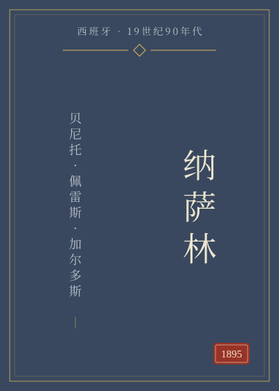

纳萨林
一、基本信息
| 作者 | 贝尼托·佩雷斯·加尔多斯 |
|---|---|
| 成书/出版 | 1895年（Britannica B370：Nazarín (1895)） Benito Perez Galdos — Encyclopaedia Britannica（百科全书） |
| 国别/地区 | 西班牙 |
| 时代 | 近代 · 19世纪90年代 |
| 体裁 | 长篇小说 |
| 语言 | 西班牙语 |
《纳萨林》圣愚结构图（主题·结构图）
二、创作背景
Britannica（B370）：Nazarín——加尔多斯作品列表。
Britannica（B370）：'perfected the Spanish realistic novel'。
题材（通说待核）：'圣愚'神父纳萨林——福音式流浪与世俗的审判。
三、内容脉络
（通说待核）纳萨林放弃教区：赤足流浪。
（通说待核）跟随的女人与监狱的'圣愚'结局。
四、主要人物表
| 人物 | 身份 | 说明 |
|---|---|---|
| 纳萨林 | 神父 | （B370 书名人物） |
| 阿利西亚/贝阿特里斯 | 跟随者 | （通说待核） |
五、主题与艺术特点
- '圣愚'与体制（通说待核）。
- 福音理想与社会的冲突（书名语境——通说待核）。
- '布纽埃尔电影'说待核（不采）。
六、影响与评论
- Britannica：Nazarín (1895)（B370）。
Benito Perez Galdos — Encyclopaedia Britannica（百科全书） - Britannica：加尔多斯现实主义（B370 作者级）。
Benito Perez Galdos — Encyclopaedia Britannica（百科全书）
七、阅读建议
难点
- 福音书写与反教权（通说待核）。
- 19世纪末西班牙。
- 《纳萨林》中译本（人民文学等——通说待核）。
- 西班牙文原版（公有领域）。
加尔多斯晚期；与《福尔图娜塔和哈辛塔》对读。
八、待核实
- 纳萨林人名核对（通说）。
- 1895年出版细节待核。
- 布纽埃尔1959年电影说待核（通说）。